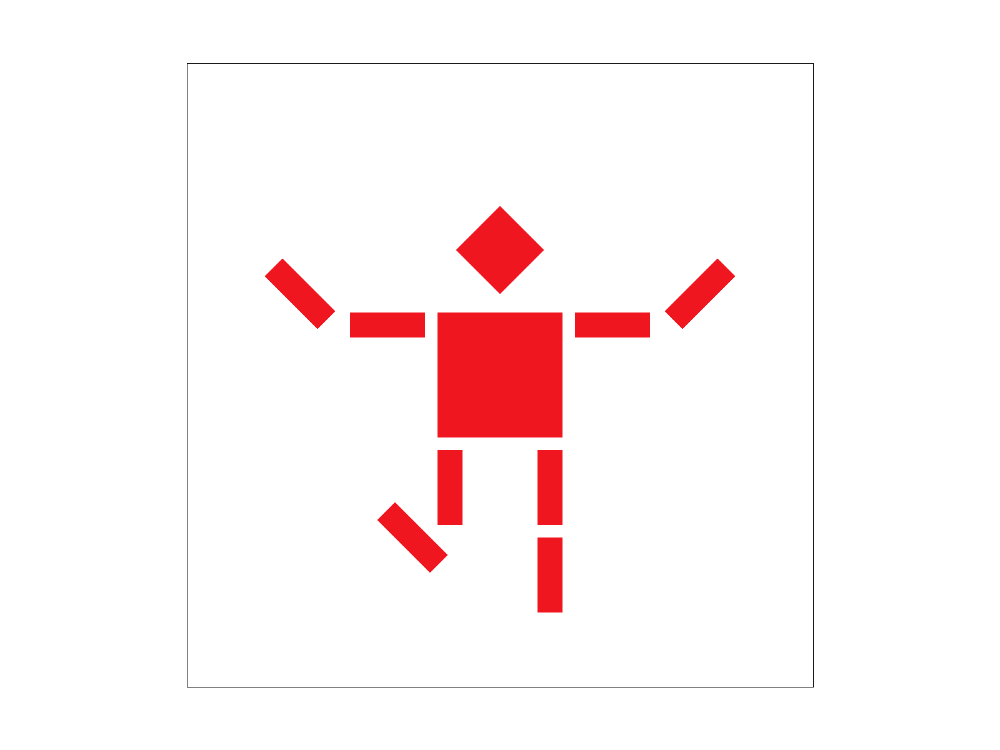
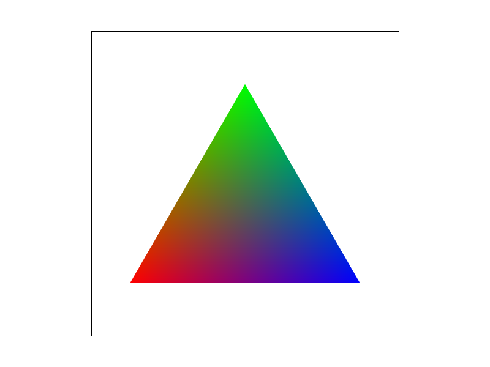
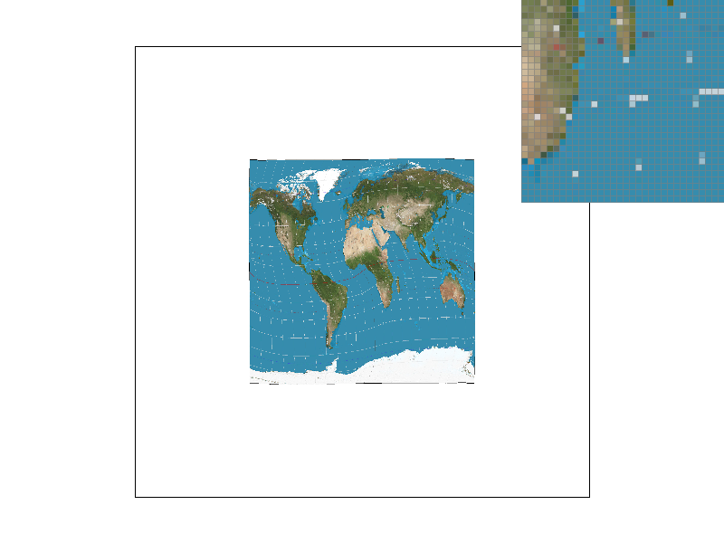
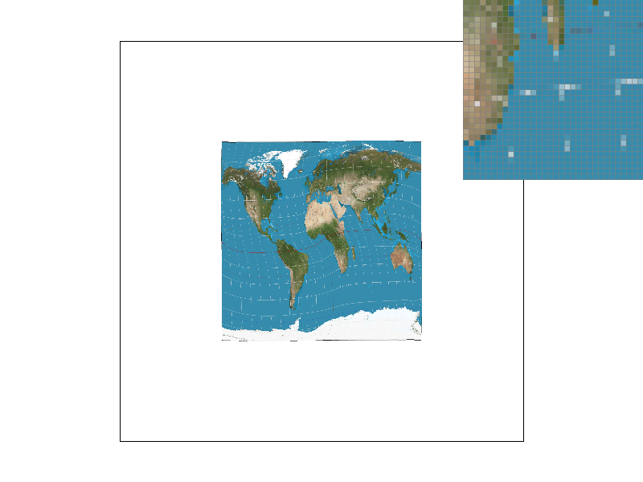
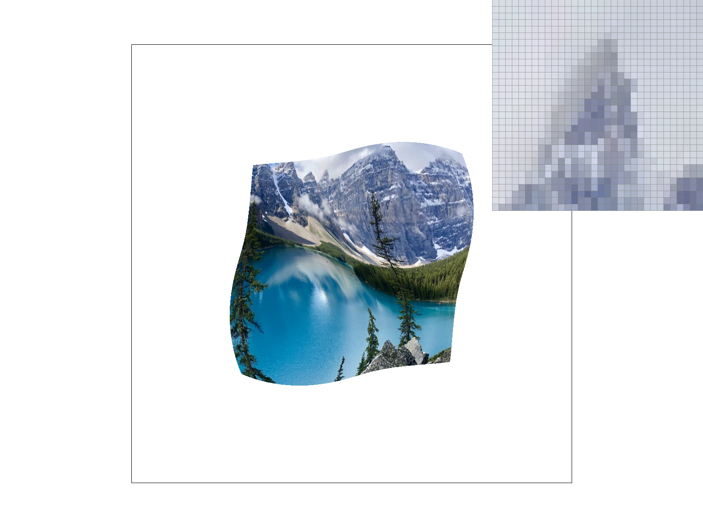

We rasterized the triangle by first finding the bounding box, and then checking the center of every pixel to
see if it is within the triangle using the point in triangle test, and if it lies in the triangle, then we fill
in the pixel with the input color. Specifically, we found the x range of the bounding box by taking the floor
of the smallest x and taking the ceiling of the largest x of the three points in the triangle, and we found the
y range of the bounding box using the same method. We wrote an additional point_in_triangle_test()
function that checks for each line of the triangle, if the line test for the vertex that is not on the line and
the line test for the pixel center are either both positive or both negative. If that is the case for all three
lines, then the point lies within the triangle. Since our algorithm is exactly the same as one that checks each
sample within the bounding box of the triangle, it is no worse than that.
Supersampling is useful because it helps remove jaggies and makes the edges of the triangles appear smoother.
Our algorithm involves using sample_buffer, a list of colors with size
width * height * sample_rate, to represent the color of every sample in the image. When drawing
a triangle, we check each sample to determine whether it lies inside or outside the triangle; if the point is
inside the triangle, we color the sample appropriately. We had to modify the resolve_to_framebuffer()
function to calculate the color of each pixel by averaging the colors of the samples within that pixel. We
also had to modify the set_sample_rate() and set_framebuffer_target() functions to
set the sample_buffer size to width * height * sample_rate, and we
changed the fill_pixel() function to set the color of all samples within a pixel to the given color.
The cubeman is jumping on one leg with hands in the air.
Barycentric coordinates are a way to describe each point in a triangle as a weighted sum of the triangle's vertices. In the image below, every point in the triangle is colored based on its barycentric coordinates. The vertices of the triangle are red, green, and blue, and each point in the triangle is described by a linear combination of the three vertices.
A screenshot of test7.png is below.

When we want to find the texture value at a specific location on the texture image, we use pixel sampling, which is a method that samples texture values using nearby pixels on the texture. For barycentric texture mapping, we found the barycentric coordinates of each point on the triangle, calculated the corresponding coordinates on the texture image, and then used the value from the texture using either nearest sampling or bilinear sampling. Nearest sampling just rounds the texture coordinate to the nearest pixel and uses the value at that texture; bilinear sampling looks at the four closest pixels and interpolates a value that is a weighted sum of the four corners. For the images we selected, when zoomed in, bilinear sampling appears more blurred compared to nearest sampling, but the grid lines are more continuous. There should be a large difference between the two in locations with a lot of color contrasts. This is because the nearest sampling only looks at one pixel, whereas bilinear sampling takes a weighted average of four nearest pixels, so if at least two pixels out of the four are very different, it would look very diffrent from nearest sampling.
Nearest sampling, 1 sample per pixel:
Bilinear sampling, 1 sample per pixel:
Nearest sampling, 16 samples per pixel:

Bilinear sampling, 16 samples per pixel:
Level sampling is a form of anti-aliasing that involves downsampling the texture image to a lower
resolution before retrieving the colors from the texture pixel values. This has the effect of making
the texture image smoother in places where a pixel in the image corresponds to multiple texels on
the texture image. We implemented level sampling by calculating the difference vectors corresponding
to each pixel location. The norm of these difference vectors help us to determine which level to use.
Using the nearest level sampling method, we simply round the level to the nearest integer; for the linear
level sampling method, we assign the pixel a color that is between the colors given by the two nearest levels.
Level sampling requires more memory than pixel sampling because we have to store the texture image at different resolutions.
Number of samples per pixel takes up more memory and is slower because we are sampling more times. However,
supersampling can be used for all shapes, while pixel sampling and level sampling only apply to texture mapping.
Level sampling has more anti-aliasing power than pixel sampling when one pixel on the image corresponds to multiple
texels on the texture image, whereas pixel sampling has more anti-aliasing power when one pixel on the image
lies between pixels on the texture image.
Level zero, nearest pixel sampling:
Level zero, bilinear pixel sampling:
Nearest level, nearest pixel sampling:
Nearest level, bilinear pixel sampling: